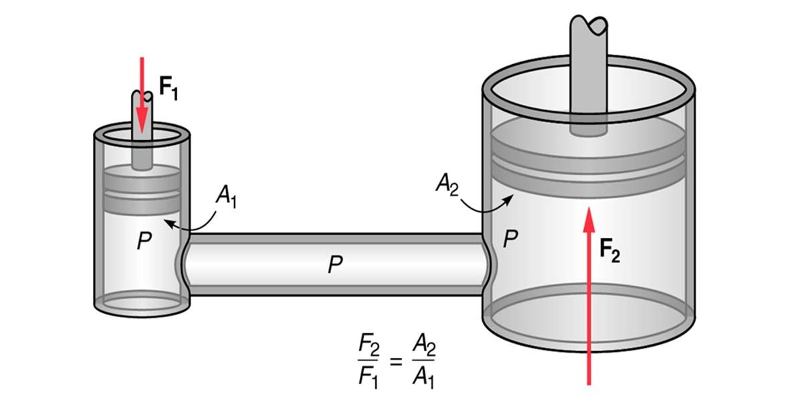

1623. június 19-én született Clermont-Ferrand-ban, ami körülbelül 350 km-re van Párizstól, ahova 1631-ben költöztek fel

Anyja, Antoinette Begont mindössze 3 éves korában veszítette el. Apja, Etienne Pascal nevelte fel, maga is egy nagytudású ember volt, Pascal sokat köszönhetett neki. Összesen négyen voltak testvérek.
Apja hamar észrevette fia tehetségét és már fiatalon magával vitte matematikai összejövetelekre
1654 novemberében volt egy nagy balesete, amikor is kocsival hajtatott át egy hídon de a lovak kiszabadultak, és Pascal úgy megijedt, hogy eszméletét vesztette és 15 napig öntudatlan állapotban volt
Neurotikus betegség jelei mutatkoztak rajta, bénulás érte, és csak mankóval tudott járni. A vérkeringési zavarok és állandó fájdalmai miatt Párizsban kezelték.
1662. augusztus 19-én hunyt el Párizsban, a Saint-Etienne-du-Mont templomban helyezték örök nyugalomra.